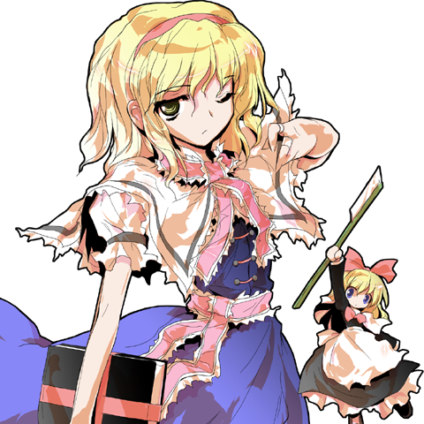

Alice Margatorid

Alice Margatroid is my favoire character in the series. She's A puppetter that also lives in the Forest of Magic.
She has a indiffernt personality and mostly spends her days inside at her cottage. She isn't rude as she enjoys being challanged in battle not even caring if she wins or loses. She cares about humans being stated to have a high friendship level and understanding of them. She enjoys showing others hosapitalty. She sometimes has a more humorous or sassy side and might find ways to creativly insult her friends (Mainly Reimu and Marisa) if they do something she belives is stupid.
That said, she isn't flawless. She has a rare timid side, can become extremely agressive if someone tries stealing her Grimoire, and is secretly scared of going all out and losing, beliving that her life wouldn't be worth living if that ever happens... again.
Abilities
Firstly, I should mention that she's a Magicain (Which is a type of youaki in this series) and formally a human herself. She can fly, doesn't age, she doesn't need to eat as well. But still does it anyway.
Her main ability is to manipulate dolls. She can make them do anything an can control multiple at once. depsite them being weak, she has an advantage of overwhelming her opponent from the sheer amount of dolls attacking instead of one powerful attack. And if all goes wrong, she has gunpowder in some of her dolls and makes them self destruct, which can catch her oppoenent off gaurd or even defeat them. She sometimes uses the dolls in a pattern like attacks similar to a puppet preformace of sorts. Her dolls are used for basic house chores as well. Making her home clean pretty easily. Do know that this doesn't make her lasy as she still has to focus when contorlling them. She also has to be awake as well. She has a book called, The Grimoire of Alice. The book is theroized by fans to be strong enough to create life or even the oppisite. Yet, Alice refuses to use it ever again due to her belief of going all out being pointless.